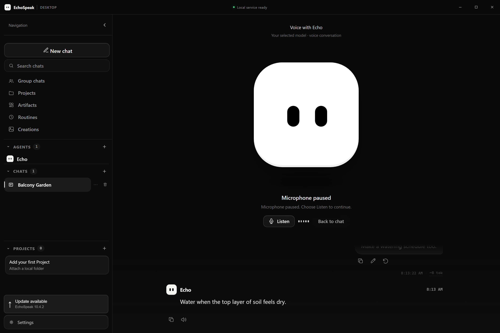
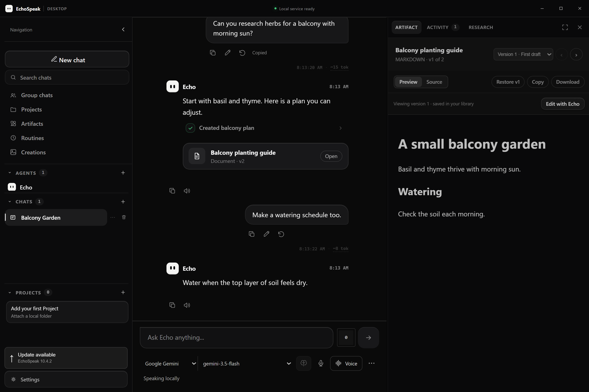

- Add Copy below both prompts and replies, and Read aloud / Stop reading below replies.
- Add Edit and Retry below prompts, including failed sends.
- Consolidate Voice into one conversation button.
- Let voice fill the conversation area beside the sidebar, with the new Echo avatar centered and a compact transcript/tool/approval view fading in below.
- Use the new Echo face in voice, companion settings and the floating desktop companion.
- Restyle tool approvals without changing exact arguments, approval identity or permission enforcement.
- Gate Think/effort by the selected model and the adapter's implemented support.
- Polish the existing artifact workspace: saved-version picker, text/source selection and Edit with Echo, preserving preview/source, download, restore and sandbox boundaries.
- Generate a concise subject title after a chat's first response, using a bounded additional provider request.
- Show a desktop update notice above Settings and move sidebar collapse/expand into an isolated top control.
- Fix read-aloud Stop leaving the playback queue stuck, so another message can immediately be read.
EchoSpeak 10.4.2 · documented update
Chat actions and full conversation voice
Copy, read-aloud, edit and retry become normal message actions. Voice fills the conversation area, approvals and artifacts are polished, and model thinking controls reflect actual support.
How this update fits
A message or reply
Copy, listen, edit or retry from its own actions.
A preserved branch
Retry an earlier prompt without replaying its old tools.
One voice experience
The selected model, avatar, transcript and approvals stay connected.
Conceptual diagram of this update, not a screenshot or a performance measurement.
What changed
UI reference: message actions, voice and artifacts


Verification recorded at the time
The version note does not contain a separate validation section. Do not infer checks from the release summary.
Historical results quoted from the version note; these checks were not rerun while producing this report collection.